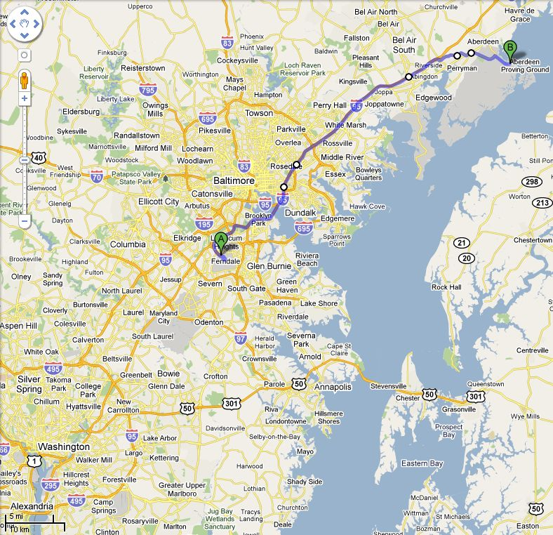

Army Research Lab, Aberdeen Proving Ground, Maryland
Baltimore Washington International Airport (BWI), Washington, D.C. to Army Research Lab, Aberdeen Proving Ground, Maryland

Clarion Hotel, Aberdeen, Maryland 21001 through Maryland Gate to visitors Center
Holiday Inn Chesapeake House, Aberdeen, Maryland 21001 through Maryland Gate to visitors Center
Wingate by Wyndham Aberdeen, Belcamp, Maryland 21017 through Maryland Gate to visitors Center
Ramada, Edgewood, Maryland 21017 through Maryland Gate to visitors Center
Country Inn & Suites By Carlson, Bel Air, Maryland 21017 through Maryland Gate to visitors Center